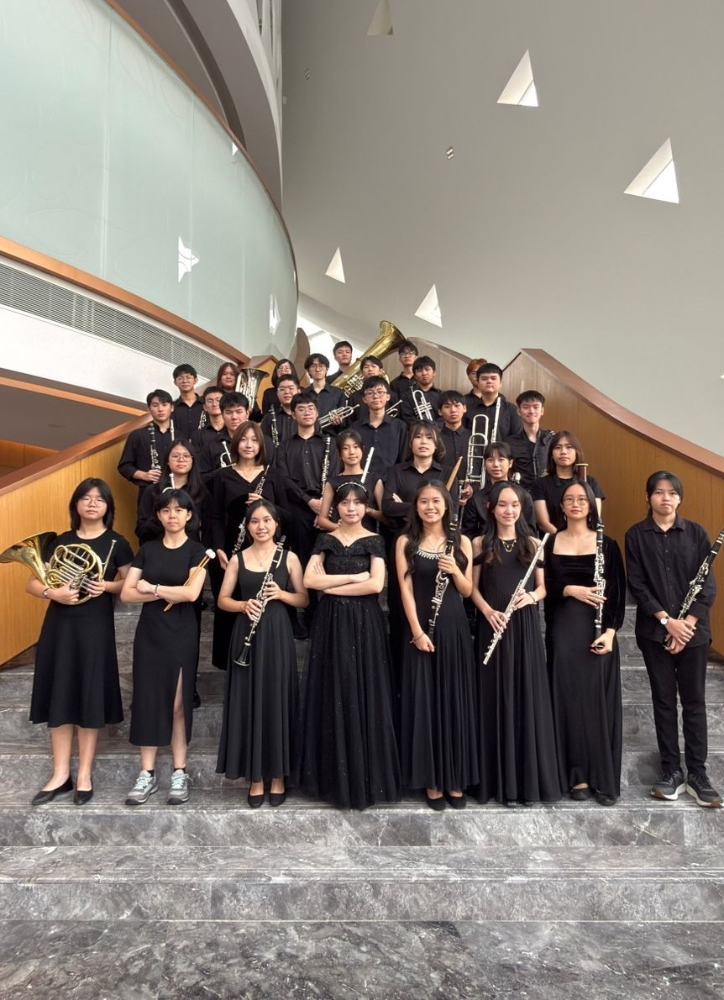
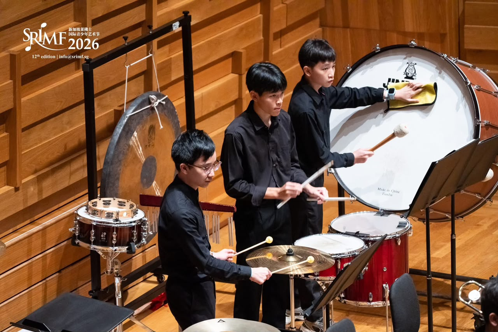
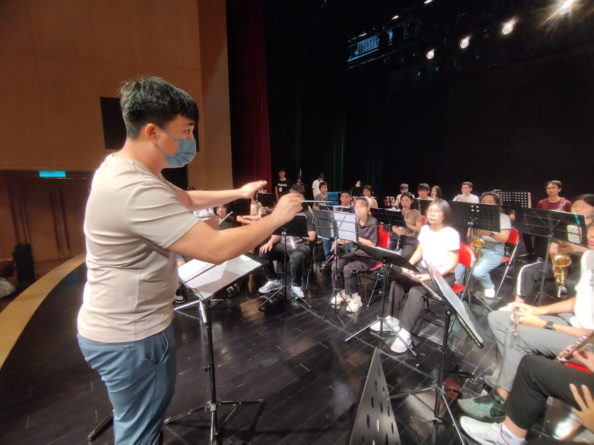
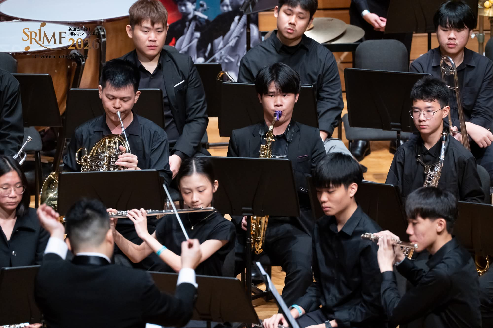

LEARN
Build musical skills, ensemble awareness and confidence through consistent rehearsal.

02 / About R & F Princess Cove Opera House Youth Symphonic Band
The R & F Princess Cove Opera House Youth Symphonic Band connects younger musicians through rehearsals, performances and a supportive ensemble environment.
The R & F Princess Cove Opera House Youth Symphonic Band gives young musicians a supportive place to learn, rehearse, perform and grow together.
03 / What We Believe
Learning through doing.
Build musical skills, ensemble awareness and confidence through consistent rehearsal.
Experience the energy of making music with other young musicians on stage and in rehearsal.
Develop discipline, friendship and a stronger musical identity as part of a community.
04 / The Experience
Rehearsal · Performance · Community
Regular rehearsals, performances and learning experiences help young musicians build confidence and ensemble awareness.

05 / The Journey
Meet the ensemble, explore the rehearsal environment and begin building confidence.
Grow technique, listening skills and ensemble awareness through regular practice.
Take the stage and experience the confidence that comes from performing together.
Carry the experience forward as a stronger musician and a more connected member of the community.
Use growing confidence, musical skills and teamwork to encourage the next chapter.
06 / At a glance
07 / What We Do
Rehearsals, concerts, workshops and community activities create a practical musical journey for members.
08 / Gallery




09 / Interested in joining?
Interested musicians can use the contact information provided by the organisation to learn more about R & F Princess Cove Opera House Youth Symphonic Band membership and enquiries.